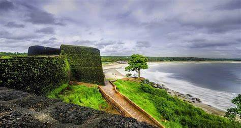
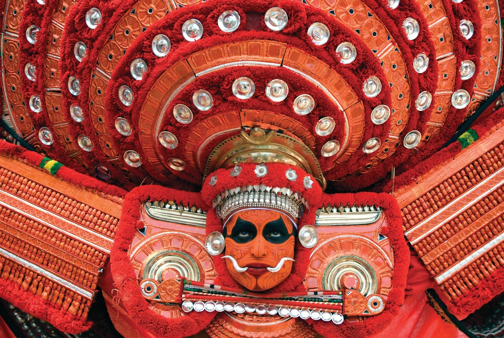
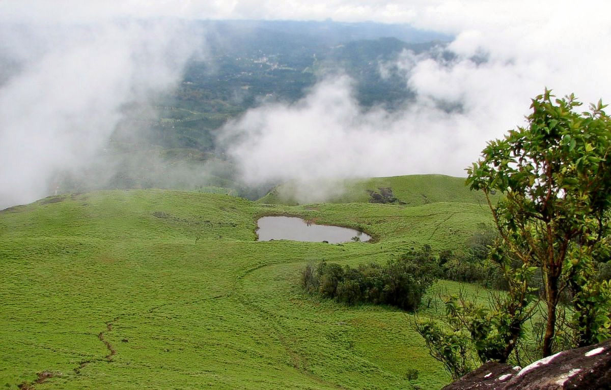
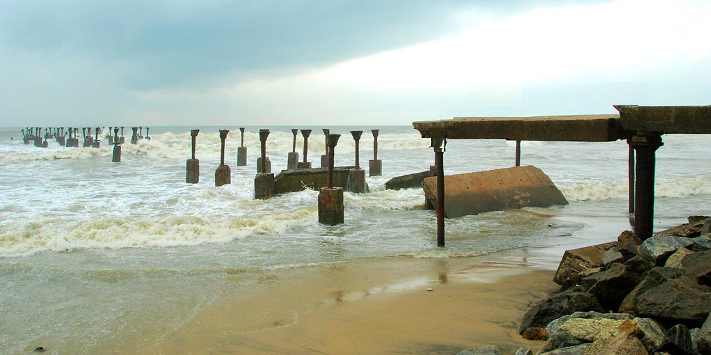
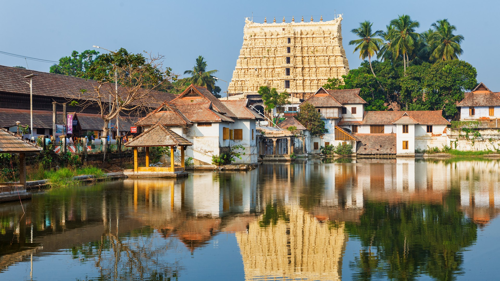
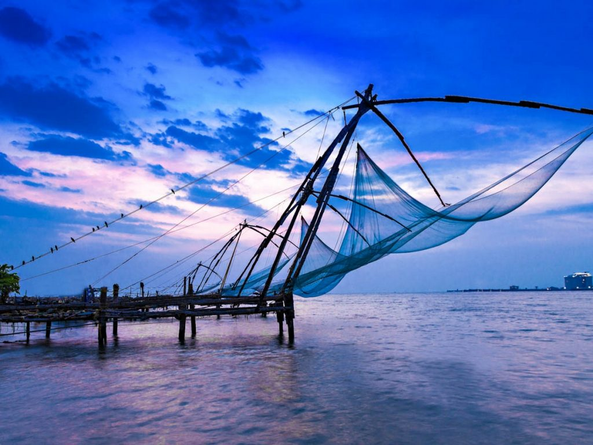
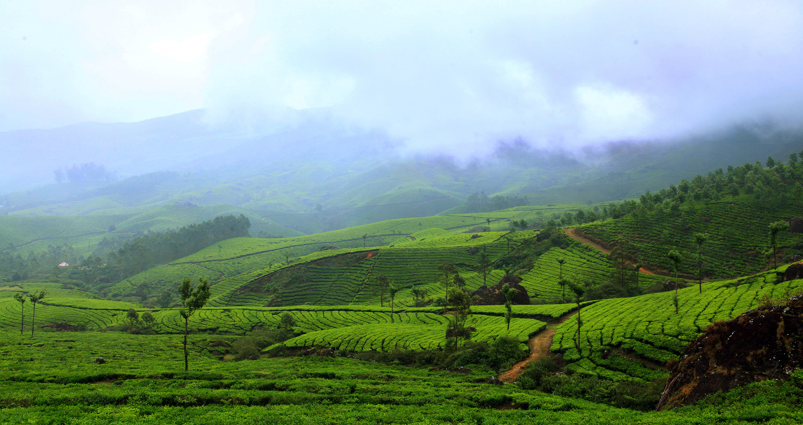
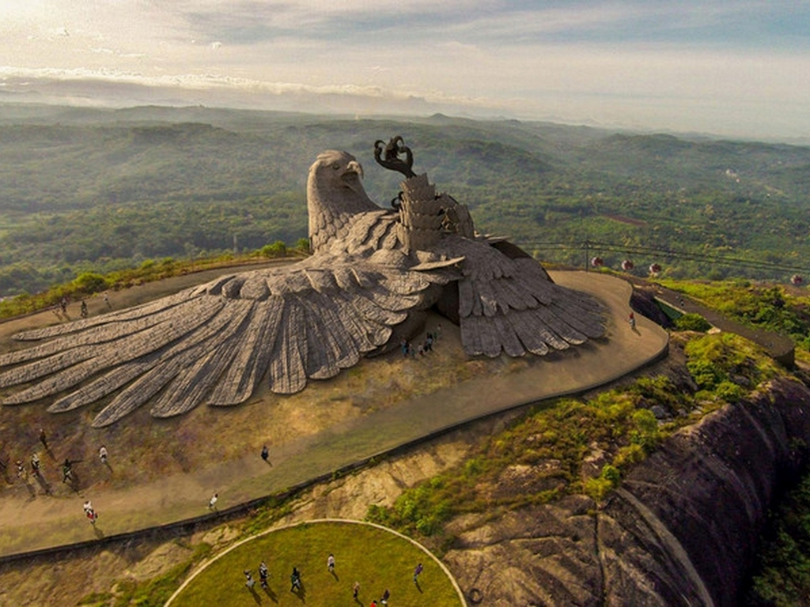

Encompassing serenity, Kerala is a charming South Indian destination that should be in every traveller’s bucket list. Adorned with the emerald backwaters, sprawling and lush tea estates, pristine hill stations, and azure Arabian Sea, Kerala tourism boasts numerous tourist places with which you will fall in love instantly.
In North Kerala, districts like Kasaragod, Kannur, Wayanad, Kozhikode, and Malappuram have many attractions for the tourists. Wayanad offers a lovely hill station holiday whereas Kozhikode offers a great beach holiday and an opportunity of bird watching.
In Central Kerala, Palakkad, Thrissur, Ernakulam, and Idukki have a number of experiences in store. Thrissur is a culture aficionado’s paradise while Idukki and Ernakulam are the hotspots for nature lovers.
In South Kerala Kottayam, Pathanamthitta, Alappuzha, Kollam, Thiruvananthapuram are ready with a variety of experiences like backwaters and houseboat in Alappuzha; beach vacations in Kollam, and a glance at rich history of Kerala at Pathanamthitta.
Kerala tourism isn’t only about imbibing natural beauty but its rich culture that is festooned with dances, festivals, delectable cuisine, literature, Ayurveda therapies, and art & craft. Kerala has it all, and you have to see it, to believe it...
The state opens its doors to beach holidays with picturesque beaches like Varkala, Kovalam and Marari. Giving a good run to pristine beaches are the backwaters of Kerala that can be best experienced in Alleppey and Kumarakom.
Kerala's beach and backwaters are accompanied by its lush and surreal hill stations, of which Munnar, Wayanad and Vagamon are the best places to visit in the summer season. With Western Ghats covering some of its area, Kerala is the best wildlife destination and is perfect for birdwatching.
We, at Tour My India would be happy to help you explore the scenic destination of Kerala, and therefore, offer to you the finest Kerala holiday packages and deals. With our best Kerala travel packages, you can rest assured for a hassle free and memorable holiday in Kerala.
List of Top 10 Most Visited Tourist Destinations of Kerala
Alleppey: Kerala’s favourite backwater tourist destination, Alleppey is famed for offering an incredible experience of staying and cruising in a traditional houseboat.
Munnar: Adorned with myriad tea estates and rolling hills, Munnar is without a doubt the best hill station in Kerala. It is a must visit tourist place in Kerala for a relaxing holiday as well as relishing adventure activities.
Kochi: A cosmopolitan city with a bustling port, Kochi is where the modern lifestyle meets the traditional one. The city is the perfect reflection of Kerala and has many experiences up its sleeves.
Thekkady: Fringing the popular Periyar National Park, Thekkady is a hill station in Kerala that attracts many nature and wildlife lovers. It is one of the best places to enjoy the scenic beauty of Kerala.
Thrissur: The cultural capital, Thrissur does not need an introduction. From drawing a large crowd on its Temple Festival (Thrissur Pooram) to being an abode to several cultural centres, the city is a must-visit in Kerala.
Kovalam: A small coastal town with some of the best beaches of Kerala, Kovalam is a place where you get to enjoy sunbathing, swimming, herbal body toning massages, special cultural programmes and catamaran cruising.
Wayanad: Dotted with camping sites, trekking trails and gorgeous waterfalls, Wayanad is a peaceful and picturesque hill station that is perfect for holiday in Kerala.
Kumarakom: The favourite place for luxury seekers desiring a holiday on the backwaters of Kerala, Kumarakom is replete with luxury houseboats and resorts promising an experience of a lifetime.
Kozhikode: Home to serene beaches and historic sites, Kozhikode is where Vasco Da Gama landed when he discovered India. The city is a perfect place to get an authentic experience of Kerala.
Thiruvananthapuram: The capital city, Thiruvananthapuram is where you can find authentic Kerala’s food, intriguing sights and a cluster of Victorian museums; it’s a place of many experiences.
Top Attractions

Bekal Fort is a medieval fort built by Shivappa Nayaka of Keladi in 1650 AD, at Bekal. It is the largest fort in Kerala, spreading over 40 acres

Theyyam are Hindu ritualistic dance forms practiced in northern Kerala and some parts of Karnataka.

Chembra Peak is a mountain in Wayanad Kerala, India, with an elevation of 2,100 m above sea level.

Kozhikode Beach or Calicut Beach is a beach on the western side of Kozhikode, situated on the Malabar Coast of India.

The Shree Padmanabhaswamy Temple is a Hindu temple located in Thiruvananthapuram, the capital of the state of Kerala, India.

Kochi, also known as Cochin is a major port city on the Malabar Coast of India bordering the Laccadive Sea, which is a part of the Arabian Sea
Alappuzha is bounded by the Laccadive Sea on its west. The town has a network of lakes, lagoons and fresh water rivers

Munnar is a town and hill station in the Idukki district of the southwestern Indian state of Kerala.
Athirapally Waterfalls are the tallest waterfalls (80 ft) in Kerala.The Athirapally waterfalls have served as a majestic location for a lot of Indian movies.

Jatayu Earth Center, also known as Jatayu Nature Park or Jatayu Rock, is a park and tourism centre at Chadayamangalam in Kollam district of Kerala.
Best Time to Visit Kerala
Summer Season in Kerala
The summer season between March and June in Kerala can be extremely hot with temperature going above 35°C.
Monsoon Season in Kerala
Monsoon begins from June and ends in September in Kerala. The state experiences heavy rainfall and extreme humidity during monsoons.
Winter Season in Kerala
Winter season in Kerala is from November to February when the weather is pleasant and the temperature remains under 30°C.